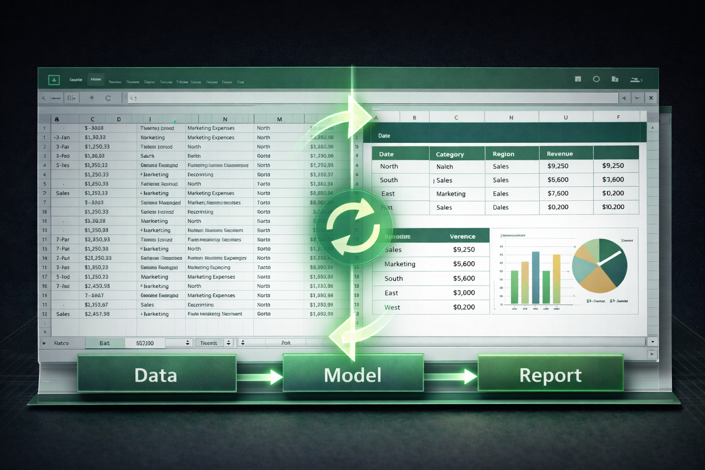
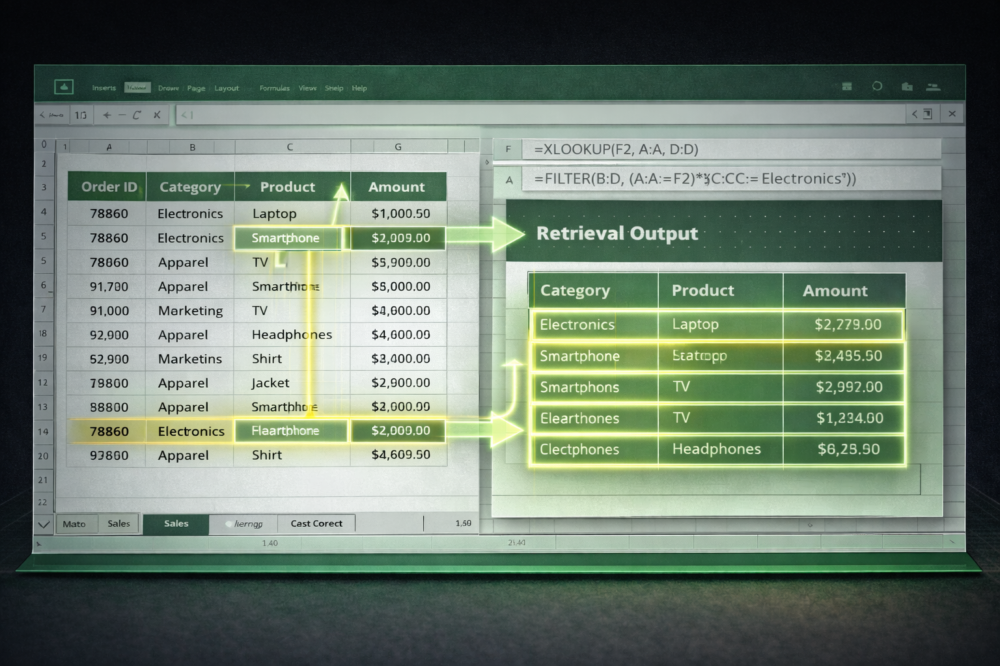

Course Topics
Instructor-led courses, each delivered as a complete artifact sequence.

Automated Report Refresh in Excel
Build self-updating report structures by organizing source data into structured tables, defining dynamic named ranges, applying flexible formula outputs, and constructing a reporting layer that refreshes automatically when data changes.

Multi-Condition Calculations in Excel
Build calculation systems that evaluate multiple criteria simultaneously by progressing from single-criterion aggregation to multi-condition logic, applying logical functions, and managing criteria through named ranges for maintainable, auditable outputs.

Dynamic Data Retrieval in Excel
Build flexible data retrieval systems by progressing from XLOOKUP and INDEX/MATCH lookups, to filtering and extracting records with dynamic array functions, and locating value positions with XMATCH for scalable, auditable outputs.

Data Cleaning and Structuring in Excel
Transform raw unstructured datasets into analysis-ready tables by assessing data quality, applying text and numeric cleaning functions, splitting and combining fields with Power Query, and validating the cleaned output for downstream use.